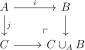

Simplicial
6 \(\Pi _1\) and Simplicial abelian groups
6.1 Fundamental Groupoid
For a simplicial set \(X\), there are atleast three natural ways to make sense of the fundamental groupoid. The most obvious is homotopy classes of pointed maps from \(S^1\) to \(X\), which is the same as \(\pi _1|X|\). Another model is to consider the path category \(P_*X\) with objects vertices and morphisms \(1\)-simplices with relations given by the \(2\)-simplices. \(G(P_*X)\), the free groupoid generated by this category. Yet another model is \(G(X_{\Delta /})\), where \(X_{\Delta /}\) is the category of simplices of \(X\).
-
Proof. Note that there is a natural isomorphism \(GP_*S|X|\cong \Pi _1|X|\). Since the map \(X\mapsto S|X|\) is an equivalence, for one of the equivalences, it suffices to show that \(GP_*\) takes weak equivalences to equivalences. Any weak equivalence factors as a trivial cofibration and a trivial fibration, and the trivial fibration will have a section, which is a trivial cofibration, so it suffices to show that \(GP_*\) takes trivial cofibrations to weak equivalences. Every trivial cofibration is a retract of a transfinite pushout of horn inclusions and equivalences of groupoids are closed under filtered colimits and retracts, so it suffices to show that a pushout of a horn inclusion is sent to an equivalence in \(GP_*\).
For a pushout of an inclusion \(\Lambda _i^n \to \Delta ^n\), the induced map on \(GP_*\) is an isomorphism if \(n\geq 2\). If \(n = 1\), we are just adjoining an equivalent object, which is clearly equivalent. Thus \(GP_*X\) and \(\Pi _*X\) are equivalent.
There is a natural functor \(GP_*X \to G(X_{\Delta /})\) given by sending \(h:f \to g\) to the map \((d^0)^{-1}d^1\) below:
There is also a functor in the other direction: it sends a simplex to its last vertex. It is easy to see that one composite is the identity, and the other is naturally isomorphic to the identity. □
There is an adjunction \(\Fun (P_*X,C)\cong \Hom _{\SSet }(X,BC)\).
-
Proof. \(P_*BC = C\) as a category, so this follows from Proposition 6.1. □
We note that the map \(S|X| \to BP_*S|X|\to BGP_*S|X|\) induces an isomorphism on \(\pi _1\). It is really the first Postnikov section.
Recall from Example 5.8.1 that \(\Cat \) has a natural model structure. \(\Grpd \) inherits a model structure as a reflective subcategory by Proposition 4.12. The fibrations are isofibrations, weak equivalences are equivalences, and cofibrations are maps that are injective on objects.
Let \(\Pi _1\) be the functor \(X\mapsto GP_*(X)\).
-
Proof. We have \(\Hom _{\Grpd }(GP_*(X),Y) \cong \Hom _{\SSet }(X,BY)\), so it is a left adjoint. Weak equivalences are sent to weak equivalences by the proof of Proposition 6.1, and cofibrations are sent to cofibrations. □
The fact that this preserved homotopy pushouts is essentially Van Kampen’s theorem. Indeed, suppose we are given a homotopy pushout diagram of simplicial sets

where \(i,j\) are injective on \(\Pi _0\). Then we can compute \(\Pi _1(C\cup _A B)\) as follows: first choose a cofibrant replacement of the diagram, apply \(\Pi _1\), then replace the diagram again so that each connected component has only one object. The pushout is then a pushout of groups, so on each connected component, we get a formula for \(\pi _1(C\cup _AB)\) in terms of a pushout of groups.
Note that there should be (and is) an \(n\)-truncated version of this result: the \(n\)-truncation functor on the \(\infty \)-category of spaces to \(n\)-truncated spaces = \(n\)-groupoids is a left adjoint, so preserves colimits. I think if you want a model category of \(n\)-truncated spaces, there should be a model structure where you add in the inclusions \(\partial \Delta ^m\to \Delta ^m\) for \(m>n\) to the trivial cofibrations.
6.2 Local Systems and Covering Spaces
Given a simplicial set \(X\) (considered as a space), a local system on \(X\) valued in a category \(C\) is a
6.3 Simpicial objects in Abelian Categories
Let \(B\) be an abelian category and \(A\) be a simplicial object.
Define \(CA\) to be the chain complex with \(CA_n = A_n\) and differential \(\sum _0^n (-1)^id_i\). This is sometimes called the Moore complex.
Define \(NA\) to be the subcomplex with \(NA_n=\cap _0^{n-1}\ker (d_i) \subset A_n\). This is sometimes called the normalized chain complex.
Define \(DA\) be the sum of the images of the degeneracies as a subcomplex of \(CA\). It is a subcomplex because \(d_is_i = d_{i+1}s_i = 1\), so after applying the differential, the terms without degeneracies will cancel.
In an abelian category, an element will mean a morphism from some (unspecified) object. Alternatively, it can mean an actual element by the Freyd-Mitchell embedding theorem.
-
Proof. Clearly \(NA\cap DA=0\). It suffices to show then that every element \(x\) of \(CA\) is the sum of something in \(NA\) and something in \(DA\). By downward induction we can assume that \(d_ix =0\) for \(i>j\). Then \(x+s_jd_jx\) is a modification by something in \(DA\) that has \(d_j=0\) in addition. □
-
Proof. There is a filtration \(D_pA\) of \(DA\) where we consider the images of the first \(p\) degeneracies. At each level, the filtration is finite, so it suffices to show that the associated graded complexes \(D_pA/D_{p-1}A\) are acyclic.
If we have an element \(s_px\), we can compute \(ds_p^2x-s_{p-1}ds_px=(-1)^{p-1}s_px\), so \(s_px\) is a boundary.
We can define a complementary filtration \((N_iA)_n = \cap _0^{\min (n-1,i)}\ker (d_i)\). The maps \(f_j:N_jA_n\to N_{j+1}A_n\) sending \(x\mapsto x\) if \(n\leq j+1\) and \(x\mapsto x-s_{i+1}d_{j+1}(x)\) otherwise give a retraction \(N_j \to N_{j+1}\).
We can define \(t_j:N_jA_n\to N_jA_{n+1}\) by \(t_k(x) = (-1)^js_{j+1}\) if \(n\geq j+1\) and \(0\) otherwise, which exhibits \(f_j\) is a deformation retraction. □
Note that the proof actually showed that the identity map of \(D_pA/D_{p-1}A\) is nulhomotopic.
Now we explain how to recover \(A\) from \(NA\). Given a nonnegatively graded chain complex \(C\), we can form \(\Gamma (C)\), a simplicial object defined by \(\Gamma (C)_n = \oplus _{n\twoheadrightarrow k} N_k\). Given a map \(m\to n\), we use the map \(\oplus _{n\twoheadrightarrow k} N_k\to \oplus _{m\twoheadrightarrow k} N_k\) that on \(n\twoheadrightarrow k\) is the map \(N_k\xrightarrow {d^*}N_l\) where the map \(l \to k\) is the mono in epi-mono factorization of the composite \(m \to n \to k\).
-
Proof. It is easy to see that \(N\Gamma \) is the identity. We can construct a map \(\Gamma NA \to A\) where for \(n \hookrightarrow k\) we sent the corresponding \(NA_k\) component of \(\Gamma NA\) to \(A_n\) via the corresponding degeneracies. We will show by induction on \(n\) that in degree \(n\) it is an isomorphism. For \(n=0\), there is nothing to do. Suppose that it is and isomoprhism for \(i<n\). Then the map is surjective, since it contains all degeneracies and also \(NA_n\).
We will show that the map \(\oplus _{n\twoheadrightarrow k} NA_k\to A_n\) is monic by induction on \(n\). Every map \(\sigma :n\twoheadrightarrow k\) has a section \(d_\sigma \) sending an element to the largest element in its preimage. We can form a partial ordering on surjective ordinal maps \(n\twoheadrightarrow k\) by declaring \(\sigma \geq \tau \) if \(d_\sigma (i) \geq d_{\tau }(i)\) for all \(i\). If \(\tau \circ d_{\sigma } = 1\), then \(\tau \geq \sigma \).
Suppose that \((x_{\sigma })\) is in the kernel, where \(x_{\sigma }\) is the component corresponding to \(n\twoheadrightarrow k\). If we fix a \(k < n\), then choose a maximal \(\sigma \) for which \(x_{\sigma }\) is nonzero. Then choosing the section \(d_\sigma \) and pulling back, the component corresponding to the identity is \(x_\sigma \), so is \(0\) by the inductive hypothesis. Thus we can assume that the only possibly nonzero coefficient is \(NA_n\), but \(NA_n\) embeds into \(A_n\), so we are done. □
Let \(K(X,n)\) be the simplicial object corresponding to the chain complex that is \(X\) in degree \(n\) and zero elsewhere.
One can draw a picture of the Dold-Kan correspondence. It says that every simplicial object has its \(n\)-simplices look like a sum of normalized terms on every way to generate \(\Delta ^n\), so we can draw a picture of an \(n\)-simplex with degeneracies labeled by which edges they contract. Below is shown the result for \(n=2\).
The following Lemma is obvious, since \(D_n \subset A_n\) corresponds to the inclusion \(\Lambda ^n_n \to A_n\).
-
Proof. This is essentially the definition of \(\pi _n(A,0)\), only with a different operation. However, the Eckmann-Hilton argument shows that the two operations agree. □
-
Theorem 6.9. If \(B\) is a presentable abelian category with enough projectives, there is a right proper combinatorial simplicial model structure on \(B^{\Delta ^{op}}\) that has equivalences things inducing isomorphism on \(\pi _*\), fibrations are maps that on the associated normalized chain complex are surjective in positive degree, and trivial fibrations are maps that are surjective with acyclic kernel. The generating cofibrations, trivial cofibrations are given by \(M[\partial \Delta ^n]\to M[\Delta ^n]\) and \(M[\Lambda ^n_i]\to M[\Delta ^n]\) respectively where \(M\) ranges over a set of projective generators.
-
Proof. Choose a small set \(X_i\) of \(\kappa \)-compact projective generators, and let \(B'\) be the category consisting of them and their endomorphisms. Then the restricted Yoneda embedding gives an adjunction to \((\Ab ^{B'})^{\Delta ^{op}}\), which is a product of module categories. Now we can apply Proposition 4.64, where we use the model structure on \(R\)-modules in Example 4.66.1. The model structure is right proper since every object is fibrant.
We need only check that in \(B^{\Delta ^{op}}\) where \(B\) is a category of \(R\)-modules, the fibrations are as claimed, as the statement about acyclic fibrations is clear. Lemma 3.1 says that surjections are fibrations. Being able to lift \(\Lambda ^{n}_n \to \Delta ^n\) implies that the map on normalized chain complex is surjective for \(n\geq 1\). Conversely, suppose that \(NX_i\to NY_i\) is surjective for \(i\geq 1\). The map \(K(\pi _0X,0)\to K(\pi _0Y,0)\) is a fibration since it is a map of discrete sets. Pulling back along the map \(Y\to K(\pi _0,Y)\), we get the map \(K(\pi _0X,0)\times _{K(\pi _0Y,0)}Y\to Y\) is a fibration, and since the map \(X\to K(\pi _0X,0)\times _{K(\pi _0Y,0)}Y\) is surjective, so is the composite \(X \to Y\). □
-
Proposition 6.10. On the level of chain complexes, the model structure in Theorem 6.9 has as cofibrations the monomorphisms with cokernel degree-wise projective, and are generated by the maps \(M[n] \to M\langle n+1\rangle \) for \(n\geq -1\), where \(M[n]\) is the chain complex \(M\) in degree \(n\) and otherwise \(0\) and \(M\langle n+1\rangle \) is the chain complex that is \(M\) in degrees \(n,n+1\) and \(0\) otherwise with differential the identity. Note that \(M[-1] = 0\) and \(M\langle 0\rangle = M[0]\).
Furthermore, the trivial cofibrations are generated by \(0 \to M\langle n\rangle \) for \(n\geq 1\).
-
Proof. If \(X\to Y\) is a cofibration, the pushout along \(X\to 0\) is the cokernel \(Y/X\), so the cokernel is cofibrant. Suppose that a cofibrant has the left lifting property with respect to trivial fibrations. Then in particular it has the left lifting property with respect to any surjection \(M\langle m+1\rangle \to N\langle m+1\rangle \), showing that each term is projective.
Conversely, suppose \(f:X\to Y\) is injective with a cokernel that is projective. We will show we can produce a lift in the diagram

First we will produce a lift on the \(n^{th}\) level of the chain complex. We can choose a level-wise splitting \(s\) of the projection \(Y\to X/Y\), and then use projectivity to find a lift of \(hs\) along \(w\), giving the desired lift.
Next, we need to show that we can modify these lifts to give a chain map that lifts. To do this, suppose that we have modified the maps fo agree on the \(j^{th}\) level for \(j<i\). Then there are two different maps \((X/Y)_i \to Z_{i-1}\) that agree after projection to \(W_{i-1}\), so they lift to \(N_{i-1}\), where \(N\) is the kernel of \(Z\to W\). Moreover, it is easy to see that it is a cocycle, so by acyclicity of \(N\) and projectivity of \((X/Y)_i\), it lifts to a map. \((X/Y)_i \to N_i\). We can then modify the map on the \(i^{th}\) level by this to make it compatible with the previous ones.
First we’ll see that \(0 \to M\langle n\rangle \) generate the trivial cofibrations. This is essentially immediate: \(M\langle n\rangle \) corepresents maps from \(M\) to the \(n^{th}\) part of the chain complex. Then since \(M\) are projective generators, this is equivalent to surjectivity.
To see that the maps \(M[n]\to M\langle n+1\rangle \) generate the cofibrations, suppose \(X\to Y\) has the right lifting property with respect to each of them. This means that whenever there is a map from \(M\) to the cocycles of \(X\) which is a boundary in \(X\), it is a boundary in \(Y\). This shows that the map \(\pi _*X\to \pi _*Y\) is injective. The pushout of \(M[n]\to M\langle n+1\rangle \) along the map \(M[n] \to 0\) is the map \(0 \to M[n+1]\), so it follows that our map is surjective on \(\pi _*\), and since we also have the right lifting property with respect to the composite \(0 \to M[n] \to M\langle n+1\rangle \), it is a fibration. □
-
Proof. It follows essentially from definition that a homotopy is the same data as a chain homotopy on the Moore complexes, so this follows from Proposition 6.5, since the Moore complexes are homotopy equivalent to the normalized complexes. □
-
Proof. This follows from Proposition 6.11 and the fact that \(R[X\times \Delta ^1] = R[X]\otimes \Delta ^1\). □
-
Proof. Let \(\theta _j:n\to 1\) be the map of posets with \(\theta _j(i) = 0\) iff \(i \leq j\). Given a map \(h\), we define maps \(h_j:A_{n}\to B_{n+1}\) by \(h(s_j(a)\otimes \theta _j)\). Then the alternating sum \(s = \sum _0^n(-1)^ih_i:A_n\to B_{n+1}\) is a chain homotopy. □
-
Proof. As usual it suffices to show trivial cofibrations are sent to weak equivalences, as a trivial fibration has a section that is a trivial cofibration. But the right adjoint preserves fibrations, so this functor preserves trivial cofibrations. □
-
Proposition 6.16. Let \(R\) be a hereditary ring (eg: a Dedekind domain). Then every nonnegatively graded chain complex \(C\) of \(R\) modules is equivalent to \(\oplus H_n(C)[n] = \prod H_n(C)[n]\). In particular, the underlying simplicial set under the Dold-Kan correspondence is equivalent to \(\prod K(H_n(C),n)\).
-
Proof. Choose surjections \(F_n\mapsto Z_n(C)\) where \(F_n\) is free, and \(Z_n(C)\) is the cycles of \(C\). The kernel of the map \(F_n \to Z_n(C) \to H_n(C)\), \(K_n\), is projective, and so since the map \(K_n\to Z_n(C)\) factors through \(B_n(C)\), it lifts to \(C_{n+1}\). Thus we have a chain map from a complex of the form \(0 \to K_n \to F_n\to 0\) to \(C\) that induces an isomorphism on \(H_n\). Moreover, this comples is clearly quasi-isomorphic to \(0 \to H_n(C)\to 0\). Taking the sum of these, we get the first claim. The second claim follows from the fact that these are all fibrant simplicial sets, so the quasi-isomorphisms are equivalences of simplicial sets. □
Given an \(R\)-module \(A\), define \(WK(A,n)\) to be the simplicial set corresponding to \(A\langle n+1\rangle \). There is a fibre sequence:
\[K(A,n) \to WK(A,n) \to K(A,n+1)\]
induced from the exact sequence of chain complexes
\[0 \to A[n] \to A\langle n+1\rangle \to A[n+1]\to 0\]
-
Proof. Suppose \(x\) is a simplex homotopic to \(y\) relative to the boundary. We would like to show that \(x\) is \(y\). By subtracting, we can assume \(y\) is \(0\), but this reduces us to thinking about the fibre, which is \(K(A,n)\). If \(x\) is an \(r\)-simplex whose boundary is \(0\), then \(x\) is a normalized \(r\)-chain. There are no nonzero normalized \(r\)-chains unless \(r=n\), so we can assume that \(r=n\). If \(z\) is homotopic to \(0\) relative to the boundary, it represents the homotopy class \(0\), so must be \(0\). □